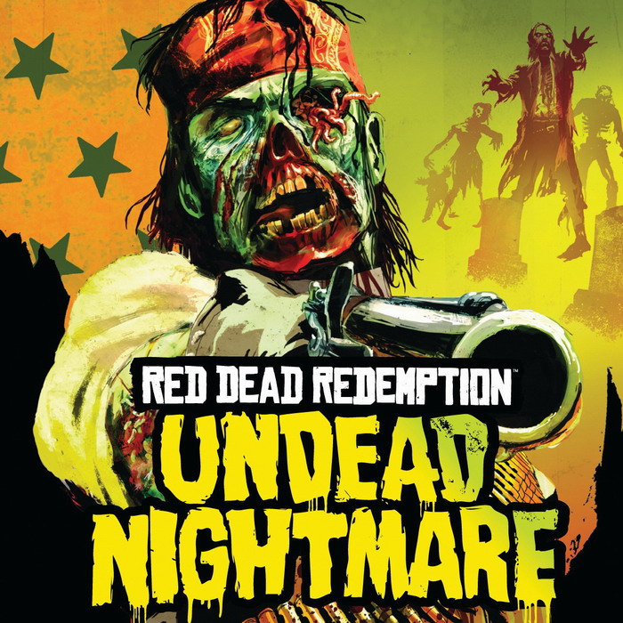

The Need for More Truth Values

- The undead script writing nightmare
- Living characters are alive (true)
- Alive characters need placement and words
- Dead characters are not alive (false)
- Not alive characters need placement and no words
- Undead characters are alive and not alive (true and
false)
- Future characters have no liveliness (neither true nor
false)
- Classical conclusions
- Dead characters need words
- Non-existent characters need placement
- TPTP syntax
- "Glut" logics (for a world full of contradictions)
- Paraconsistent logics do not derive everything
from contradictions.
- Dialetheic logics allow formulae to be both true
and false ... both
- "Gap" logics (for a world full of ignorance)
- Hollow logics allow formulae to be neither true nor
false ... neither
- The undead script writing dream ... in a hollow dialetheic logic
- Hollow dialetheic conclusions do not include classical conclusions
- The undead are
grateful